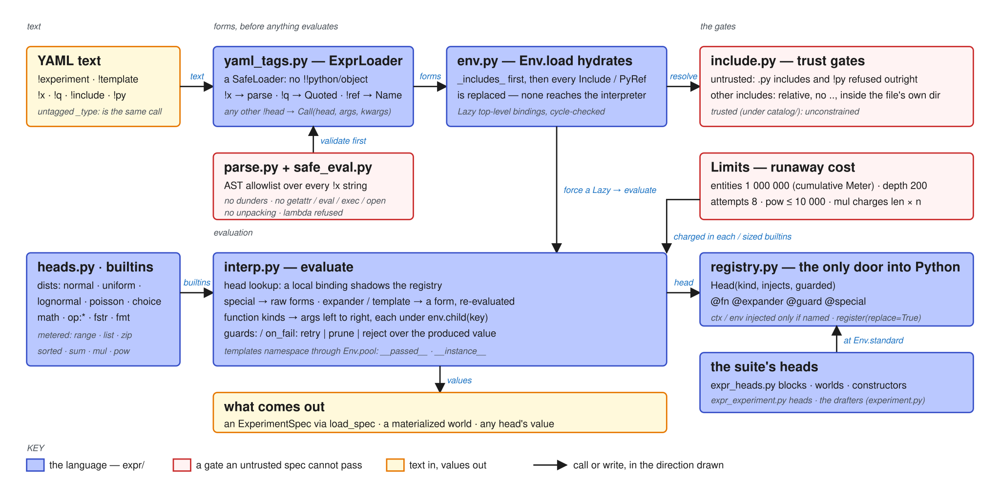

:>> ABIO → ABIO Architecture → ABIO-Expr
ABIO-Expr¶
The subsystem map of the Expr language: how YAML becomes forms and evaluates, the modules behind it, and where its sandbox could leak.

YAML text enters yaml_tags.load_text, a SafeLoader subclass whose constructors turn !x into parsed forms, !q into Quoted, !ref into Name, !include and !py into their own nodes, and any other !head into a Call; an untagged mapping carrying _type: becomes the same Call, which is how a saved world round-trips. Env.load hydrates before anything evaluates: _includes_ first, then every Include/PyRef in the tree is replaced, so neither ever reaches the interpreter; each top-level key becomes a Lazy binding forced on first lookup with a cycle check. Head lookup lets a local binding shadow the registry. Special heads get raw forms; expanders and templates return a form the interpreter re-evaluates; every function kind gets its arguments evaluated left to right, each under env.child(key), so every named node draws from parent_seed.child(key) and editing one node never re-rolls a sibling. Templates namespace names through Env.pool (__passed__ keeps the caller's spelling, __instance__ prefixes the rest). Any call may carry guards: and on_fail: retry | prune | reject, checked over the produced value. load_spec returns an ExperimentSpec, and spec_to_text is its declared inverse.
Modules¶
| MODULE | LOC | Role |
|---|---|---|
form.py |
115 | The AST: Name, Call, Quoted, Include, PyRef;frozen, compare by value. |
yaml_tags.py |
174 | ExprLoader(SafeLoader), the tag constructors, RESERVED_TAGS, load_text, dump_structural. |
parse.py + spec_lang/safe_eval.py |
258 + 219 | Inline !x text ↔ forms; validate_expression runs first, an AST allowlist that refuses dunders, getattr/eval/exec/open/__import__, frame attributes, unpacking and non-name call targets; parse refuses lambda after. |
env.py |
~330 | Env (standard, child, scope, lookup, head, load, hydrate, pool), Ctx (with the per-load instance-name claims), Limits (entities 1 000 000 via a cumulative Meter, depth 100, attempts 8), Lazy, ExprError. |
include.py |
171 | The trust gates: untrusted specs refuse .py includes and !py outright and confine every other include to a relative, ..-free path inside the including file's own directory; catalog/ is trusted. |
interp.py |
480 | evaluate, dispatch by head kind, TemplateHead.expand, the guard machinery, the specials let each if quote run seed template op:and op:or. |
registry.py |
212 | Head(kind, injects, guarded), Registry.register/get/view, the fn/expander/guard/special decorators, GuardViolation. |
heads.py + spec_lang/builtins.py |
~250 + 73 | Distributions, math, op:*; metered builtins (range, list, zip, sum, flatten, fstr; add/mul charge their output; pow refuses exponents over 10 000 and results over 2²⁴ bits). |
x.py |
60 | The Python spelling X.<head>(...). |
spec_lang/scope.py · decorators.py |
122 · 84 | The lexical scope chain behind Env.bindings;the @biotype registry entity hydration uses. |
Heads register as an import side effect: Env.standard imports expr.heads, suite.expr_heads and suite.expr_experiment, whose module-level decorators call registry.register(replace=True); constructor heads come from infra.entity.get_registered_heads(), and the drafters register when suite/experiment.py imports. expr/ imports nothing from bio/; its one upward module-level edge is suite.dist.Seed.
Where the sandbox could leak¶
Box 4 hypotheses (2026-09-10): the depth cap counts templates and expanders and a stray RecursionError converts (default depth 100); add/sum/flatten/fstr are metered and pow is bounded by result bits; a second template instance claiming a name refuses and pools: declares pool arguments (T054); a second head registration refuses unless replace=True, and the no-peeking guards read the guarded sets live (T054); safe_eval went with T056; the include base and error-text rows were discarded or LOW.
| HYPOTHESIS | Why it would be quiet | Where |
|---|---|---|
| The depth cap skips templates and expanders | a template body's scope is built with env.depth unincremented and an expander's output is re-evaluated in the same env; a self-recursive template ends in a Python RecursionError, not the intended ExprError at 200 |
interp.py ~110, ~191 |
op:add is unmetered |
op:mul charges the meter; add, fstr, flatten do not, so a chain of lazy bindings doubling a list is free |
heads.py ~118, ~160, ~190 |
on_fail is read unevaluated and guarded is metadata |
on_fail: !ref prune silently means the literal; Head.guarded is consumed only by GUARDED_DRAFTERS, so a call omitting guards: bypasses them |
interp.py ~274; registry.py ~47 |
| The include base defaults to the working directory | text-only loads and Env.hydrate fall back to Path.cwd(); the trusted branch is unconstrained and the catalog/ test compares resolved parents, so a symlink decides trust |
env.py ~273, ~296; include.py ~52; experiment.py ~532 |
| Template pool keys collide by string value | __passed__ is keyed on the string value of any argument, so an argument equal to an unrelated pool name re-aliases it; the instance label is the last path segment, so two instances at one key share a namespace |
interp.py ~118–127 |
| Error text is an oracle for hidden ids | guard messages and offenders key paths ride the raised ExprError, which surfaces to whoever authored the spec |
interp.py ~293–308; env.py ~183–257 |
replace=True on every registration |
a later import or a trusted .py include overwrites a head name without the duplicate error; safe_eval permits lambda that only parse refuses |
registry.py ~152; safe_eval.py ~122 |